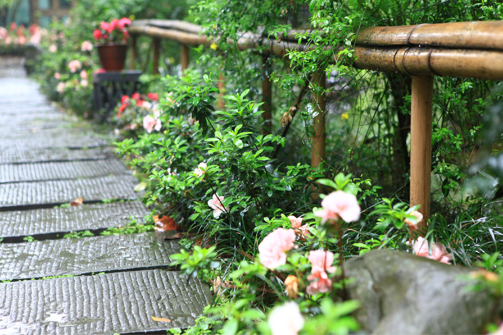
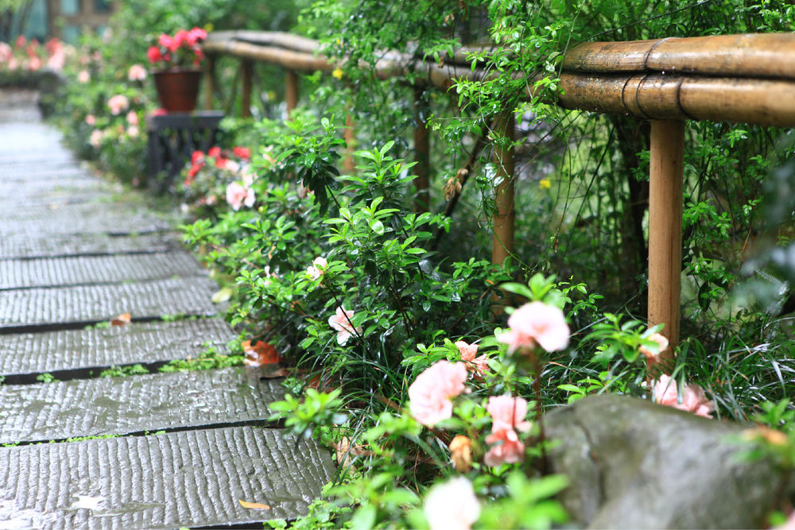
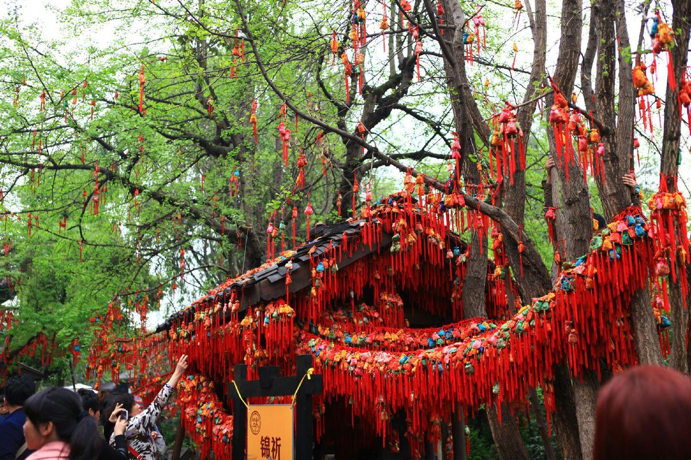
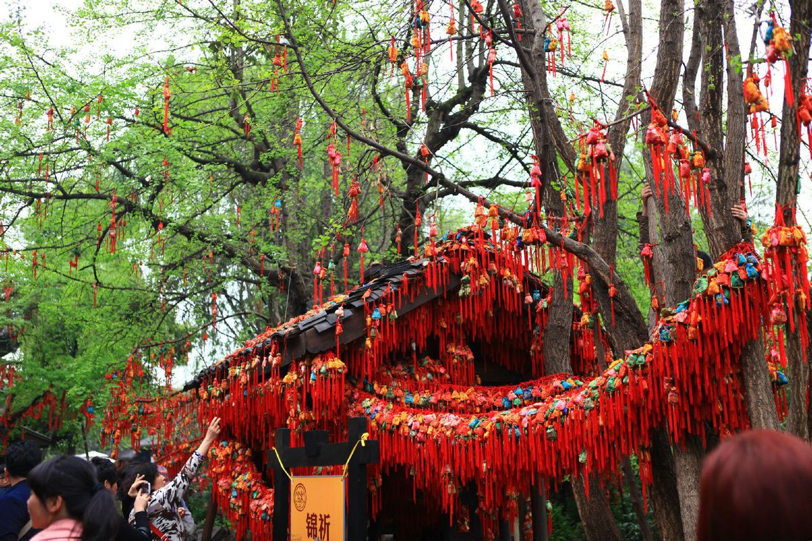

成都旅游 Chengdu traveling
成都旅游 Chengdu traveling
四川火锅，以麻，辣，鲜，香著称, 其消费群体涵盖极广泛、人均消费次数极高！其风味特点为：鲜香味美、口味大众化、用料更广泛、制作精细、乐意方便、养神健体！
在成都，闹市有茶楼，陋巷有茶摊，公园有茶座，大学有茶园，处处有茶馆。 尤其是老街老巷，走不到三五步，就会有一间茶馆，而且基本都茶客满棚，茶馆是爱茶者的乐 园，也是人们休息、消遣和交际的场所！
掏耳俗称“小舒服”，是一种艺术和技术融为一体的民间手艺。 在成都市宽窄巷子，有一群靠这门技艺生存的掏耳师傅，他们被称为采耳师。掏耳是民俗七十二 行中的一技，也是四川特有的一种耳文化。
川剧，是中国传统戏曲剧种之一，。川剧脸谱，是川剧表演艺术中重要的组成 部分，是历代川剧艺人共同创造并传承下来的艺术瑰宝。 2006年5月20日，川剧经国务院批准列入第一批国家级非物质文化遗产名录。


 


 
